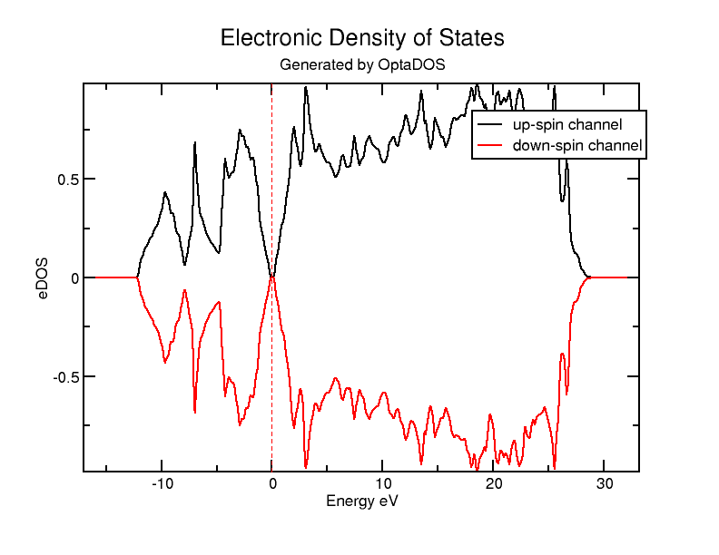
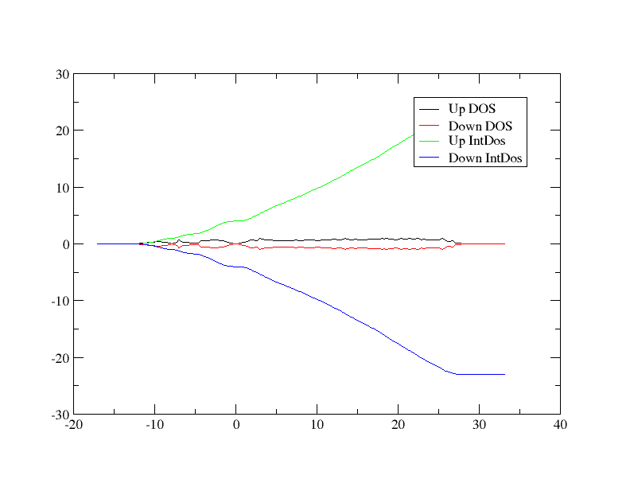
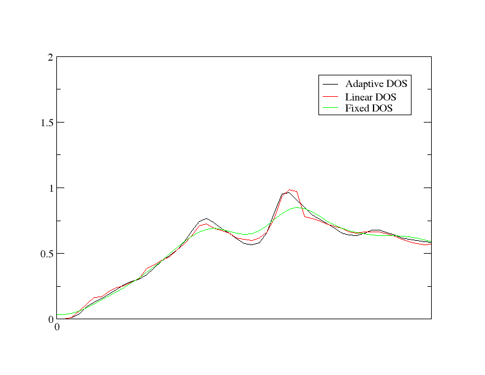

态密度
在本教程中，我们将通过一个简单的例子，使用 Optados 计算晶态硅在双原子单元中的电子态密度（DoS）。然后我们将探讨 Optados 的自适应展宽功能如何用于分辨固定展宽方案会掩盖的精细光谱特征。
ODO 输出
首先，我们将运行计算并检查Optados输出文件 Si.odo我们将使用 cell 文件
Si.cell
%BLOCK LATTICE_CART
2.73 2.73 0.00
2.73 0.00 2.73
0.00 2.73 2.73
%ENDBLOCK LATTICE_CART
%BLOCK POSITIONS_FRAC
Si 0.0 0.0 0.0
Si 0.25 0.25 0.25
%ENDBLOCK POSITIONS_FRAC
SYMMETRY_GENERATE
KPOINTS_MP_GRID 10 10 10
SPECTRAL_KPOINTS_MP_GRID 10 10 10
以及 param 文件
Si.param
TASK : SPECTRAL
SPECTRAL_TASK : DOS
PDOS_CALCULATE_WEIGHTS : TRUE
SPIN_POLARIZED : TRUE
CUT_OFF_ENERGY : 200
IPRINT : 1
前两行内容决定了我们将进行态密度（DoS）的计算。正常运行 castep，然后使用 Optados 输入文件对硅（Si）进行 optados 计算。
Si.do.i
TASK : dos
EFERMI : optados
DOS_SPACING : 0.1
BROADENING : adaptive # Default
ADAPTIVE_SMEARING : 0.4 # Default
FIXED_SMEARING : 0.3 # Default
SET_EFERMI_ZERO : true # Default
DOS_PER_VOLUME : false # Default
NUMERICAL_INTDOS : false # Default
FINITE_BIN_CORRECTION : true # Default
一个值得注意的有趣之处是这一行 efermi : optados - 这会将费米能级的内部值设置为其从态密度（DoS）中推导出的值。这对于后续计算非常重要。其他有效选项包括：
file，其中optados使用由生成本征值的电子结构代码计算出的值insulator，其中 optados 使用一个基于假设系统为非金属而计算出的值- 一个您可能希望使用的自定义值
这会生成3个文件：
Si.odo- 一般输出文件。Si.adaptive.dat- 自适应加宽的态密度原始输出数据。Si.adaptive.agr- 适配加宽的态密度文件，适合用xmgrace绘制。
我们来看一下这个文件 Si.odo
在数据输出的顶部，我们有一个类似这样的表格：
```
+--------------- Fermi Energy Analysis ---------------------------+
| From Adaptive broadening |
| Spin Component:1 occupation between 3.99964 and 4.00003 <-Oc |
| Spin Component:2 occupation between 3.99964 and 4.00003 <-Oc |
| Fermi energy (Adaptive broadening) : 4.4479 eV <- EfA |
+-----------------------------------------------------------------+
```
它使用积分态密度来确定费米能级，并通过指出费米能级处的电子数来说明积分误差。由于输入文件中显示有4个自旋向上电子和4个自旋向下的电子，因此该分析似乎是令人满意的。
Optados 现在会对费米能级处的态密度进行一些分析。
+----------------------- DOS at Fermi Energy Analysis -----------------------+
| Fermi energy used : 4.4479 eV |
| From Adaptive broadening |
| Spin Component : 1 DOS at Fermi Energy : 0.0010 eln/cell <- DEA |
| Spin Component : 2 DOS at Fermi Energy : 0.0010 eln/cell <- DEA |
+----------------------------------------------------------------------------+
由此我们可以推断存在一个能隙。
稍往下一些，Optados 然后从其计算的态密度中计算能带能量。
+--------------------------- Band Energy Analysis ---------------------------+
| Band energy (Adaptive broadening) : -6.3472 eV <- BEA |
| Band energy (From CASTEP) : -6.3471 eV <- BEC |
+----------------------------------------------------------------------------+
随着optados计算质量的提高，这两个值应收敛到相同的答案。
其他输出文件
最后，Optados 将费米能级调整为 0 eV，以用于输出文件——我们来查看另外两个生成的文件。
态密度被写入 Si2.adaptive.dat。这包含5列——第一列st 是能量，2并 是自旋向上态密度，3rd 是自旋向下的态密度，4那 是自旋向上态的积分态密度，和5那 是自旋向下的积分态密度。如果改为 SPIN_POLARIZED : FALSE 被设置在 param 文件中只会包含三列：能量、态密度和积分态密度。
该文件可以由您首选的图形绘制软件进行绘图。然而， optados 已使事情变得简单，并生成了一个 Si2.adaptive.agr 可直接使用绘图软件绘制的文件 xmgrace - 要生成一张图，你只需要运行：
图应该看起来有点像这样：

需要强调的是，这一点 agr 该文件仅包含态密度数据，不包含积分态密度。若要绘制所有数据，包括自旋向上和向下的积分态密度，请运行 xmgrace -batch other_data.bat 关于批处理文件
other_data.bat
READ BLOCK "Si.adaptive.dat"
BLOCK XY "1:2"
S0 LEGEND "Up DOS"
BLOCK XY "1:3"
S1 LEGEND "Down DOS"
BLOCK XY "1:4"
S2 LEGEND "Up IntDos"
BLOCK XY "1:5"
S3 LEGEND "Down IntDos"
这应该会生成一个类似于：的图形

能隙分析
让我们回到查看一下 odo 输出文件。因为 COMPUTE_BAND_GAP : TRUE 默认情况下，带隙分析部分已经存在。结果是一个表格，其形式如下：
+----------------------------- Bandgap Analysis -----------------------------+
| Number of kpoints at VBM CBM |
| Spin : 1 : 1 1 |
| Spin : 2 : 1 1 |
| Thermal Bandgap : 0.6724150536 eV <- TBg |
| Between VBM kpoint : 0.05000 0.05000 0.05000 |
| and CBM kpoint: -0.45000 -0.45000 -0.05000 |
| ==> Indirect Gap |
+----------------------------------------------------------------------------+
| Optical Bandgap |
| Spin : 1 : 2.5639496096 eV <- OBg |
| Spin : 2 : 2.5639441673 eV <- OBg |
| Number of kpoints with this gap |
| Spin : 1 : 1 |
| Spin : 2 : 1 |
+----------------------------------------------------------------------------+
| Average Bandgap |
| Spin : 1 : 3.8132681742 eV <- ABg |
| Spin : 2 : 3.8132658290 eV <- ABg |
| Weighted Average : 3.8132670016 eV <- wAB |
+----------------------------------------------------------------------------+
Optados 在能带间隙分析中非常谨慎。它使用原始本征值（未经展宽），并计算热间隙、光学间隙以及在整个布里渊区内的平均间隙的性质和大小。对于多谷半导体，Optados 会报告导带最小值或价带最大值具有相同能量的数目，但不会报告间隙的性质。
展宽
我们现在将比较不同的展宽形式。这可以通过改变第一个参数来快速实现。 Si.odi 到
task : compare_dos
并重新运行 Optados。这给我们带来了4个新的输出文件—— Si_linear.dat 并且 Si_fixed.dat，加上它们相应的 agr 文件。让我们通过运行来比较它们 xmgrace -batch compare.bat 关于批处理文件
compare.bat
READ BLOCK "Si.adaptive.dat"
BLOCK XY "1:2"
S0 LEGEND "Adaptive DOS"
READ BLOCK "Si.linear.dat"
BLOCK XY "1:2"
S1 LEGEND "Linear DOS"
READ BLOCK "Si.fixed.dat"
BLOCK XY "1:2"
S2 LEGEND "Fixed DOS"
WORLD XMIN 0
WORLD XMAX 5
说明
我们正在考察一个较小区域，范围在0到5 eV之间，这样更容易看到差异。
图应如下所示：

为了进一步改善图形的外观，你可以降低 DOS_SPACING 并调整其值 ADAPTIVE_SMEARING 在 odi 文件。